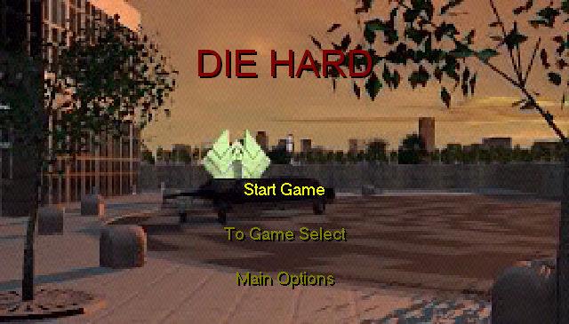
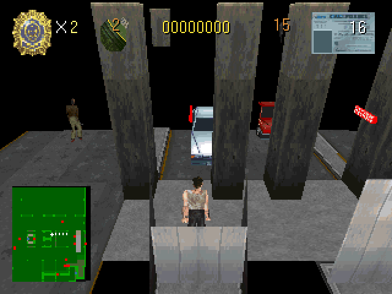

名稱：終極警探三部曲1／虎膽龍威三部曲1 (Die Hard Trilogy，英文版) 簡介：Probe 1996年出品的射擊動作遊戲，共分成三集，分別對應第三人稱射擊、軌道射擊、 駕駛競速等元素。1997移植至PC，由Fox代理發行 [待補]。   保護：光碟 備註：XP以上系統安裝時，要將SETUP.EXE設成Win9x相容。 備註：建議使用PCem/86Box+Win9x系統執行，否則速度會過快。

